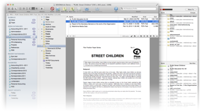

|

Most of your time working with DEVONthink Pro Office will be spent in a main window. Main windows give you access to your groups and documents, while also allowing you to view and edit files.
Open a new main window with
File > New Window
. DEVONthink Pro Office also opens a new window when you open a database; you can set this option by checking Open New Window in Preferences, General tab.
The title of the window shows the name of document or group if one is selected, as well as its icon. Click-and-drag the icon to move it to another group or database or to the Finder to export it. Click the title bar with ⌘ pressed to reveal the document's location within the database; select an enclosing group to reveal it.
Views
Different views present your information however you prefer:
-
List: Displays groups and documents as a list; groups can be expanded/collapsed by clicking the gray triangle in front of their name. Double-clicking items opens them in separate windows.
-
Icons: Displays groups and documents as icons. Double-clicking items opens them in separate windows. For images, DEVONthink Pro Office displays a live thumbnail. Adjust the size of the icons using the slider located in the upper right corner of the window, just below the toolbar. Use
View > Show/Hide Details
to switch between icons only, and icons with details in a list.
-
Columns: Displays groups and documents in columns along with a preview pane, similar to iTunes. Selecting a document displays it in the preview pane; selecting a group shows the items it contains in a new column. You can double-click the column resizer to make it fit automatically, and each column can be sorted individually.
-
Split: Splits the window into an item list and a view/edit pane. To switch between a vertical and horizontal split, use
View > Widescreen
. The item lists all groups and documents in the database, and may contain one or more columns. By default, it shows only item names. Expand/collapse groups by clicking the gray triangle.
-
Three Panes: Resembles the way Apple Mail displays folders, items, and contents. The pane on the left displays all groups, the top right pane displays the documents contained in the selected group, and the view/edit pane at the lower right shows the contents of the selected document, and allows you to edit it if possible. Tip: When you click the Home button on the toolbar, you can see the files located in the root of your database.
-
Tags: Shows all documents in a database for selected tags. Select a tag to show all items carrying this tag; select multiple tags (e.g. by selecting them with the ⌘ key held) to show documents carrying all selected tags. Select no tag to show all items. Delete tags by pressing the Delete or Backspace key; this moves ordinary tags to the trash and excludes group tags from tagging. New documents created in this view are either created in the group represending the tag or in the global inbox, and are tagged with the selected tag. Read more...
To adjust the size of the different panes, move the mouse to the divider between two panes until the mouse pointer changes into a line with two arrows. Then, click on and drag the divider to adjust the size of the panes.
Sidebar
In the sidebar, which you can show or hide via
View > Show/Hide Sidebar
, DEVONthink Pro Office lists:
-
The global inbox
-
The trash can
-
All open databases
-
Recent databases
-
Favorites
-
Smart groups
-
Smart groups (selecting by date ranges)
-
Smart groups (selecting by read/unread status)
Use the sidebar to quickly access your open and recent databases, as well as the
global inbox
, your favorite databases, groups and news feeds, smart groups, and the trash. Select an open database to switch to it or double-click a recently used database to open it. Read-only databases are marked with a read-only icon. Items dragged to a database in the sidebar are placed in that database's inbox. Collapse or expand sections using the collapse triangles.
Using the contextual menu you can create new databases, open and close them, move them to the Finder trash, empty DEVONthink Pro Office's trash, create smart groups, open the Database Properties panel, and add databases or groups to or remove them from the Favorites. Databases and groups in the Favorites are also listed in destination popup menus.
For the Inbox, most database-related menu commands are available, too, such as
Tools > History
or
Tools > Concordance
. An action menu and a + button give access to commonly used functions.
In addition, you can use drag-and-drop to move items to the Inbox or the trash or add groups or news feeds to the Favorites. When you select a group in the Favorites, DEVONthink Pro Office will show that group's contents and even open the database that contains it if necessary. When you drag a smart group to the sidebar it will be copied to the sidebar; double-clicking a smart group opens the smart group editor.
For the Inbox and the trash DEVONthink Pro Office always shows the number of items contained, independent from the preferences. The Recent databases segment does not show databases that are also designated as a favorite to prevent listing them twice.
The sidebar's width and visibility is specific for each database, which allows you to customize the look and feel of each database.
Items
DEVONthink Pro Office displays groups and documents, much as the Finder does. Select items with a single click, and drag them from one group to another. You can also drag items to the Finder or other applications, or drag folders and files from the Finder to DEVONthink Pro Office. You can also drag selected items or clippings such as text and images from any application to DEVONthink Pro Office and vice versa.
Press the ⌘ and ⌥ keys to link to the dragged item(s) instead of importing them to the database. For Bookends 11.3.1 or later this adds a formatted rich text instead of a simple reference.
Single-click items to rename them. Double-click items to open them in a separate document window or in their native application (depending on the document type). For smart groups, double-clicking them in any view except Icons view opens the
Smart Group Editor
. Press the Space bar to preview the item using Quick Look; close the preview with the close gadget or press ⎋ or Space again to close it.
Colored item names, colored group icons, and special icons tell you whether an item is a duplicate or replicant, its read/unread status or what type of search a smart group uses.
- Empty groups are shown in gray.
- Duplicates are shown with their name in blue; replicants are shown in red. Read more...
- Icons of feeds or other unread items show an "unread" indicator in the State column. Read more...
- Smart groups using dates are shown with a clock icon; smart groups using the "unread" status are marked with a unique icon, too.
- Regular groups are shown in blue, while groups also used for tagging are shown in yellow with a "tag" icon embossed.
In addition, icons indicate whether a item is locked, has an attached comment or script, or has been indexed instead of imported. Read more...
To view or edit the contents of a document or group, do the following:
-
List/Icons View: Double-click the group or document to open it in a separate window. Hold the ⌘ key as you click if you want to close the originating window at the same time (hoisting). This also works in the other views.
-
Vertical/Horizontal Split/Columns View: Select the group or document. The view/edit pane shows the contents of the group or document. Click the triangle in front of a group to expand it, then select a document to view or edit.
-
Three Panes View: Select a group or sub-group, then select the document you want to view or edit. DEVONthink Pro Office shows the group or sub-groups content in the view/edit pane. Click the triangle in front of a group to expand it. When you select multiple groups or news feeds, the upper right pane shows all documents in all selected groups in one list, just like in Apple Mail. This does not work for smart groups.
View/edit pane
The view/edit pane (not visible in icons and list view) shows the content of the selected document and, if possible, allows you to edit it. You can edit plain text, rich text, and HTML pages.
Read more here about the various document types that you can view or edit in this pane.
Info bar
Just below the toolbar you'll find the info bar. For selected items it shows an icon, the file name including location, and the kind, size, and modification date. If you're not sure of the document type, this is the place to look.
Use the slider located on the right side of the info bar to adjust the size of icons.
Toolbar & shortcuts
The toolbar of DEVONthink Pro Office main windows carries many commands for manipulating the way the application displays information and handles selected items. Many of the toolbar items are simply shortcuts for menu commands. Here's a short list of the available tools:
Please find a list of shortcuts in the appendix. Read more...
-
Navigation: Navigates to the top level of the database, or one level up. Useful when you have opened a second main window by double-clicking a group, and now want to move up the groups hierarchy in this window. Also shows or hides the
Sidebar
-
Go To Document: Selects the first/previous/next/last document. Only available in Three Panes view or in separate
document windows.
-
View: Switches between the possible views. See above.
-
Actions: Provides commands for modifying the selected documents, similar to the Action menu in other views. Generally, the Action menu contains a selection of the commands also available via the contextual menu.
-
Scripts: Gives access to the
Scripts menu
.
-
Quick Look: Opens the standard Quick Look panel for the selected items.
-
Group +: Creates an empty group.
-
Smart Group +: Creates a new smart group.
-
Plain/Rich Text +: Creates a blank plain or rich text document.
-
Link +: Creates a new link document.
-
Sheet +: Creates a new sheet.
-
New Record: Creates a new record (row) in a sheet.
-
Delete Records: Deletes selected records (rows).
-
New Column: Adds a new column to a sheet.
-
Delete Columns: Deletes selected columns.
-
Columns: Opens the columns editor, which allows you to rename, reorder, add, or delete columns.
-
Mark Up: Highlights, underlines or strikes through selected text. This option is available for rich text documents, editable PDFs, and web archive.
-
Highlight: Highlights the selected piece of text with the color selected in
Preferences, Colors tab
.
-
Open: Opens the selected documents in separate document windows.
-
Open With >: Opens the selected documents in an external application.
-
Launch URL: Opens the Internet location stored in the URL field of the selected documents, e.g., a web site URL in Safari.
-
Copy URL: Copies the Internet location stored in the URL field of the selected document to the clipboard.
-
Delete: Moves the selected documents to the Trash.
-
Save: Saves all changes to the currently edited document.
-
Import, Export: Imports new documents; Exports the selected documents.
-
Reveal: Reveals the location of the selected items in either the same main window, if possible, or by opening a new one.
-
Show in Finder: Opens a new Finder window showing the selected items.
-
Update: Updates an indexed item. Read more...
-
Print: Prints the current or selected documents.
-
Info: Opens the Info panel.
-
Group/Ungroup Items: Group creates a new group and moves all selected documents into it. Upgroup moves all documents contained in the selected groups one level up and then deletes the then-empty group.
-
Auto Classify: Classifies the selected documents and moves them into the most appropriate group if possible.
-
Find (search field): Lets you search your databases. Select your search options from the magnifier pop-up menu, enter your search term, and press Return. Click the search field's search button to return to the standard view. The pop-up menu also lists the last 25 used search terms. Check Prefix while typing to let DEVONthink Pro Office begin to search as you type. The last word of the term is treated like a prefix ('word*'). Add more characters to refine and to speed up the search and press Enter or ↩ to finish the search, or to search for whole words only. Read more...
-
Find: Opens the Search window.
-
Bigger, Smaller Font: Increases or decreases the font size.
-
Subscript, Superscript: Makes selected text subscipt or superscript.
-
Ruler: Shows or hides the ruler for rich text.
-
Fonts: Shows the standard Mac OS X Font panel.
-
Colors: Shows the standard Mac OS X Colors panel.
-
Make Plain/Rich Text: Converts the current text document to plain or rich text.
-
Highlighting: Highlights selected text. The pop-up menu lets you select the highlight color.
-
Link: Makes selected text a Wiki-style link. If the text is a URL, the link points to that URL.
-
Edit Source, Show Page: Toggles between source and page display of selected HTML documents.
-
Zoom: Zooms in, out, or to view width, or shows the document in 1:1.
-
Full Screen: Shows the selected documents in full screen mode. Press ⌘F8 to return to windowed mode.
-
(Capture) Page: Captures a web page as HTML code to either the current group or to the inbox.
-
(Capture) Web Archive: Captures a web page as web archive to either the current group or to the inbox.
-
(Capture) PDF: Captures a web page as a PDF to either the current group or to the inbox.
-
(Capture) Note: Captures selected elements of a web page as a rich text document to either the current group or to the inbox.
-
DEVONagent: Opens DEVONagent. If the view/edit pane or frontmost window displays a web page, it opens the same URL in DEVONagent.
-
Refresh: Refreshes the selected news feeds.
-
Backup: Creates an internal backup of the database and then optimizes the database structure; same as
Tools > Backup & Optimize
.
-
Verify: Verifies the database structure; same as
Tools > Verify & Repair
.
-
Import Email: Opens the
Import Email
window.
-
Send by Email: Creates a new message in the default email application and adds the selected items as attachments. Supported email applications are Apple Mail, AirMail, Mailsmith, Microsoft Outlook, Postbox, and PowerMail. If the selected item is an email message, the sender is automatically inserted as the recipient and the text of the original message is inserted instead of an attachment. Notes: Postbox is currently only able to send one selected file. Unsupported email clients (e.g. Thunderbird) can only send the plain text of one selected file.
-
Image Capture: Opens the
Image Capture
window for capturing paper documents.
|
Note: Not all of these commands are always available. You can customize the toolbar by selecting
View > Customize Toolbar
or by clicking with ⌃ pressed (right-click) the toolbar background and selecting Customize Toolbar from the contextual menu.
|
Contextual menu
The contextual menu (which appears when you right-click or ⌃ click an item) offers a range of commands tailored to what you wish do with the clicked object.
Most of the commands offered by the contextual menu have counterparts in a main menu, so you'll recognize them immediately. However, to save menu bar real estate, DEVONthink Pro Office gives you access to some options only via the contextual menu.
-
New Window: Opens a new main window.
-
Open Database: Opens the selected database.
-
Close Database: Closes the selected database.
-
Delete Database: Closes the selected databases, and moves it to the Finder's trash.
-
Empty Trash: Empties the trash can.
-
Database Properties: Shows the
Database Properties
of the selected database.
-
Add to Favorites: Adds the selected item to the favorites.
-
Remove from Favorites: Removes the selected item from the favorites.
-
New Smart Group: Creates a new smart group in the sidebar.
-
Edit: Opens the smart group editor (only available for smart groups).
-
Delete Smart Group: Removes the selected smart group from the sidebar.
-
New: Creates a new document.
-
Open: Opens a selected document(s) in a new window.
-
Open in Tabs: Opens a selected document(s) in a new tab.
-
Open With: Opens a selected document(s) with an external application.
-
Refresh Feed(s): Manually refreshes the selected news feeds.
-
Launch URL: Opens the URLs indicated by the URL field of the selected documents.
-
Copy URL: Copies the Internet location indicated by the URL field of the selected document to the clipboard.
-
Copy Item Link: Copies a unique URL refering the selected item to the clipboard. Paste this URL into any third-party application to directly reference an item in your DEVONthink Pro Office database. Read more...
-
Show in Finder: Reveals the item's file in the Finder.
-
Get Info: Opens the
Info
panel for the items.
-
Move Into Database: Imports the selected indexed item (and its children, if necessary) into the database. Only available for indexed items. Use this command to consolidate your database.
-
Move To External Folder: Moves items added to an indexed group from the database to the connected folder in the filesystem. Only available for items in an indexed group.
-
Exclude from Tagging: Excludes the selected groups from tagging.
-
Move To >: Moves the group or document to the group you select in the sub-menu. Note: Moving items to another database cannot be undone.
-
Replicate To >: Creates a replicant of the group or document in the group you select in the sub-menu. Note: Doesn't replicate if a replicate for the item is already present at the destination.
-
Duplicate To >: Creates a duplicate of the group or document in the group you select in the sub-menu. Note: Copying items to another database cannot be undone.
-
Label: Changes the label of the selected items.
-
Mark: Marks the selected items as flagged/unflagged, read/unread, locked/unlocked and shows/hides the state of the items.
-
Move To Trash/Move All Instances To Trash: Moves the selected document or all instances of the selected documents, such as including all replicants (if any), to the trash. Hold the ⌥Option key to reveal the Move All Instances To Trash command.
-
Thumbnails: Creates, updates, or deletes the thumbnails for the selected items.
-
Convert: Converts the selected items to other document formats.
-
Group: Creates a new group containing the selected items. Appears as Tag if the new group would be created in the Tags group.
-
Auto Classify: Classifies the selected items and moves them to the group where they best fit.
-
Send Reply: Creates a reply to the selected item. Only available when the selected item is an email message. The text of the document is inserted as quote into the new message.
-
Send by Email: Creates a new message in the default email application and adds the selected items as attachments. Supported email applications are Apple Mail, AirMail, Mailsmith, Microsoft Outlook, Postbox, and PowerMail. If the selected item is an email message, the sender is automatically inserted as the recipient and the text of the original message is inserted instead of an attachment. Notes: Postbox is currently only able to send one selected file. Unsupported email clients (e.g. Thunderbird) can only send the plain text of one selected file.
-
Sort: Sorts the list of items to any available criterium.
-
Empty Trash: Empties the trash (only available for the trash).
In the Tags view, the following commands are available:
-
Save Search: Available in the right pane of the Tags view, this command creates a smart group from one or multiple selected tags. Use it to select some tags and to save the search as a smart group for convenient access.
In the sidebar, the following commands are available:
-
New Window: Opens a new window for the selected database.
-
New Database: Creates a new database.
-
Open Database: Opens a selected database.
-
Show in Finder: Shows the database package in the Finder.
-
Close Database: Closes the selected database.
-
Delete Database: Closes the selected databases, and moves it to the Finder's trash.
-
Add to Favorites: Adds the selected database to the favorites.
-
Remove from Favorites: Removes the selected database from the favorites.
-
Empty Trash: Empties the trash.
|
Note: For your convenience, DEVONthink Pro Office also makes the
Services menu
, available via the contextual menu.
|
|